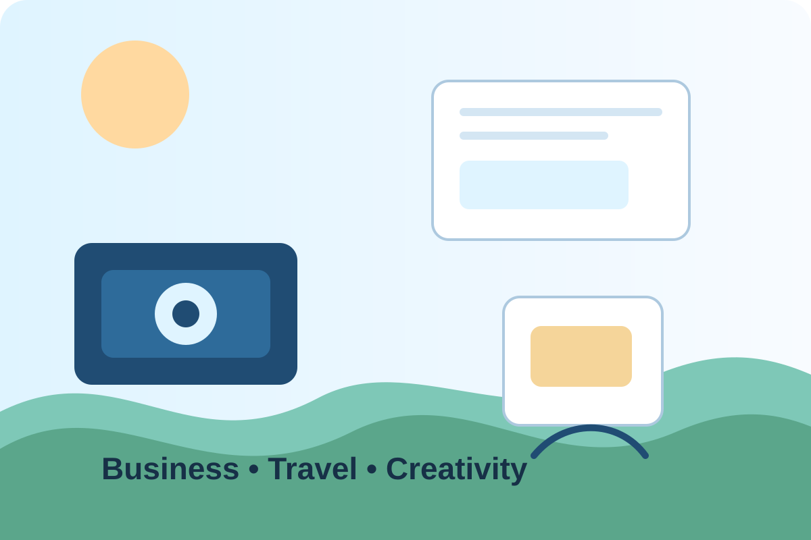

Professional Goals
I am building a foundation in business, communication, and analysis so I can contribute in roles that require both careful thinking and strong people skills.
Strengths
Organized, dependable, service-minded, visually creative, and comfortable taking initiative on projects that require planning, communication, and follow-through.
Interests
Accounting, marketing, travel planning, content creation, photography, and using technology to make ideas easier to understand and more engaging.

A site with both polish and personality
The professional pages use Bootstrap for a clean, modern layout. The from-scratch page shows raw HTML and CSS skills through custom layouts, an anchor link, a nested list, embedded media, and a live Tableau visualization.
The final web app is an exposure simulator called Exposure Explorer, designed to help users practice matching camera settings to real-world photo situations.